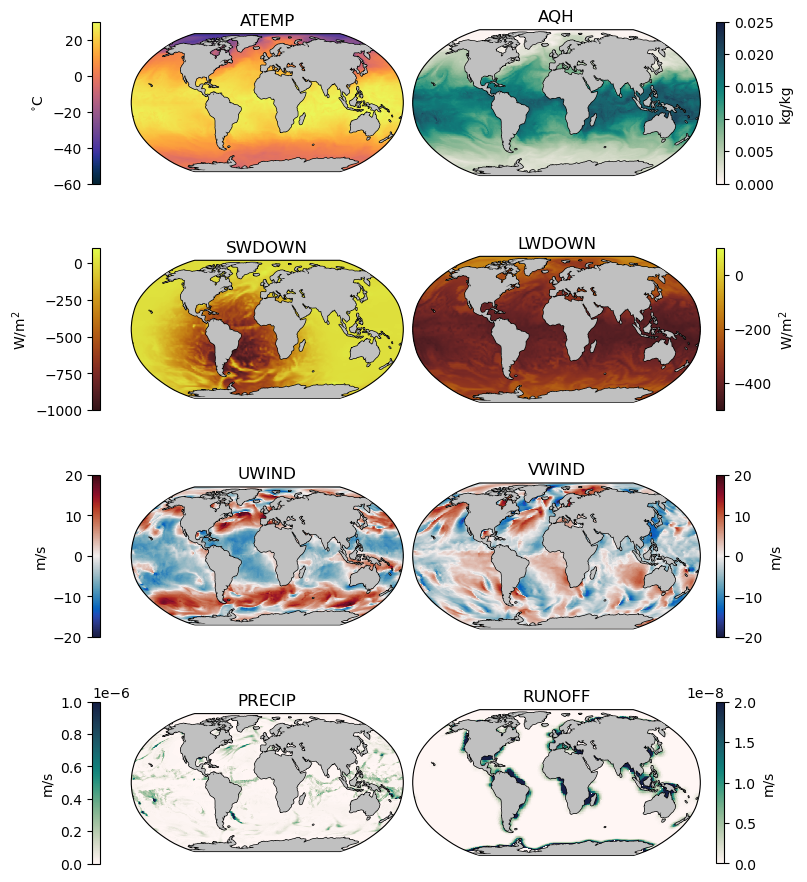

External Forcing#
External forcing fields (usually) refer to atmospheric parameters that modify the temperature, salinity, or momentum in the upper ocean. However, there are some occasionally-used external forcing fields that are implemented at the ocean floor, such as geothermal heat flux. The following table lists commonly-used external forcing fields:
Common External Forcing Fields#
Field Name |
Model Variable |
Units |
Notes |
|---|---|---|---|
Surface Air Temperature |
|
K |
If Celsius is used, an offset of 273.15 must be applied in the data.exf file. |
Surface Specific Humidity |
|
kg H\(_2\)O per kg air |
|
Downward shortwave radiation |
|
W/m\(^2\) |
Downward positive by default. If units are upward positive, a \(-1\) scalar must be applied in the data.exf file. |
Downward longwave radiation |
|
W/m\(^2\) |
Downward positive by default. If units are upward positive, a \(-1\) scalar must be applied in the data.exf file. |
Zonal Wind |
|
m/s |
Wind is positive eastward in model coordinates, which is not necessarily east on the real globe, depending on the orientation of the model grid |
Meridional Wind |
|
m/s |
Wind is positive northward in model coordinates, which is not necessarily east on the real globe, depending on the orientation of the model grid |
Precipitation |
|
m/s |
|
Runoff |
|
m/s |
Example Fields#
The following plot shows the 8 external forcing fields using the ECCO Version 5 Alpha State Estimate. The timesteps shown are for 15 January 2008.
The exf package#
In MITgcm, the primary way to implement external forcing conditions is through the exf package.
exf Compile-Time Considerations#
To enable the exf package for compilation, add a line for exf in the packages.conf files.
Note
While the exf package does not strictly require the use of the cal package, many of the exf funtionality was built around tools from the cal package. With this in mind, it’s recommended that the cal package also be enabled by adding a line for cal in the packages.conf file.
Note that by default, the EXF_OPTIONS.h file is configured to use all of the fields listed in the table above. Further information is provided on the MITgcm documentation page for the exf package.
exf Run-Time Considerations#
data.exf#
The data.exf file is a required file when using the external forcing package. There are four main namelists in this file:
Namelist |
Purpose |
|---|---|
|
Set parameters for reading, scaling, and applying external forcing conditions |
|
Set the file names and start dates for each external field file |
|
Set scaling parameters for the forcing fields |
|
Set the spatial interpolation method for each field |
|
When using open boundaries, the time stepping is outlined in this namelist. Not required if boundary conditions are not used. |
Formatting the fields#
The external forcing fields are stored in files sized (time, Ny, Nx). There are two ways the files can be organized:
All of the external forcing conditions can be added in a single file, or
The external forcing conditions can be stored in annual files. In this case, each file must end in an underscore and the year. For example,
UWIND_2001,UWIND_2002, etc. When using this option, the flaguseExfYearlyFields= .TRUE.,must be set inEXF_NML_01and the file name is specified asuwindfile='UWIND', inEXF_NML_02- the underscore and year will be appended based on the model time.
Temporal Interpolation#
In the data.exf file, temporal information is provided for each file in EXF_NML_02. For example, consider the following information for the zonal wind file:
uwindstartdate1 = 19920101,
uwindstartdate2 = 030000,
uwindperiod = 21600.0,
This information indicates the first timestep in the file corresponds to the date 1 January 1992 at 3:00 am. The first date line corresponds to the date (YYYYMMDD) and the second to the time (HHMMSS). The final line corresponds to the temporal resolution in the model - in this case, the file provides 6-hourly wind speeds i.e. the second timesteps corresponds to 1 January 1992 at 9:00 am.
In the special case that a climatological file is provided (i.e. if the file is a monthly file that will be repeated each year in the model), then the date information is omitted and the period is set to uwindperiod = -12,.
To determine the external forcing value at a given time, the model linearly interpolates between the two closest timesteps at each model point.
Spatial Interpolation#
There are two ways that the model can spatially interpolate from the provided conditions to the model grid.
First, the external forcing conditions can be provided on the exact same grid as the model. In this case, a flag of 0 should be provided in EXF_NML_04:
uwind_interpMethod = 0,
Second, the model can linearly interpolate the external forcing conditions onto the model grid. In this case, the geographic information for the locations of the external forcing field must be provided in EXF_NML_04, e.g.
uwind_lon0 = 0.0000000D0,
uwind_lat0 = -89.4628220D0,
uwind_lon_inc = 0.7031250D0,
uwind_lat_inc = 0.6958694,0.6999817,0.7009048,0.7012634,0.7014313,
245*0.7017418,
0.7014313,0.7012634,0.7009048,0.6999817,0.6958694
uwind_nlon = 512,
uwind_nlat = 256,
where the lines above correspond to the lower left coordinates of the field, the grid spacings, and the shape of the field.